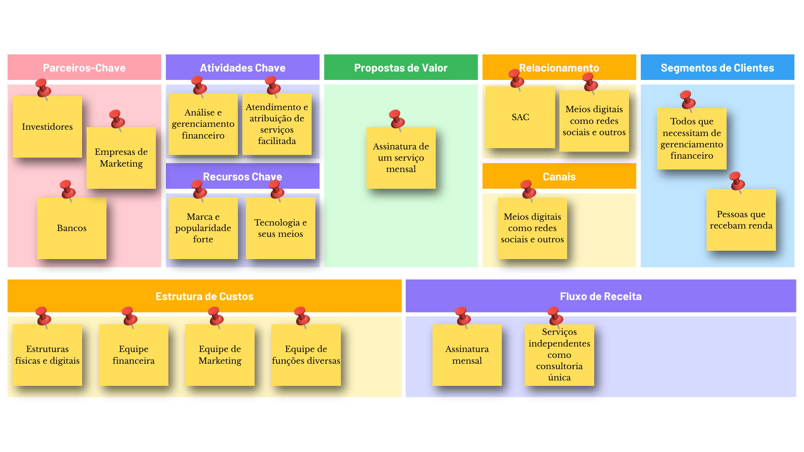

Nossa empresa, a Zero Debts é uma Instituição Financeira que visa cuidar das finanças daqueles
que não conseguem ou estão desesperados para se desatolarem de dívidas ou para aqueles que apenas não sabem lidar com suas finanças
e desejam ter um bom gerenciamento financeiro para poderem botarem em ação planos futuros, como viagens compras de bens como
casas, carros etc, mas também para quem deseja investir.
Criamos nossa empresa após percebermos o quão necessário é este serviço é na sociedade atual, como é apresentado abaixo numa
notícia postada pela CNN Brasil em 24/06/2026.
A solução proposta pela Zero Debts é um serviço de consultoria financeira personalizada, onde os usuários podem receber orientações
específicas para suas situações financeiras, ajudando-os a criar um plano de ação para sair das dívidas e alcançar seus objetivos financeiros. Essas
orientações são feitas por profissionais da área financeira, que por meio da nossa empresa, você pode ter acesso aos serviços desses profissionais de
forma facilitada por meio dos nossos planos mensais, que por uma assinatura mensal você tem acesso ao serviço de gerenciamento financeiro, assim
conseguindo juntar aquele dinheirinho ou dar um fim naquela dívida que te causa dor de cabeça.
Além disso, nossa empresa segue um planejamento estratégico bem definido, de acordo com nosso Business Model Canvas que segue abaixo.

Contudo, como qualquer empresa que prese por organização, desenvolvimento e planejamento, a Zero Debts também tem um plano de organograma que na mais é do que um
plano organizacional que gerencia a estrutura de cargos da empresa.

Como anteriormente mencionado, a Zero Debts acredita na importância de uma estrutura organizacional eficiente para o sucesso da empresa, por tanto também
utilizamos análise SWOT/FOFA em nossa empresa para que consigamos identificar nossas forças, fraquezas, oportunidades e ameaças, assim tornando nossa empresa, um projeto
facilmente gerenciável, nossa análise SWOT/FOFA segue abaixo.
Nossas forças se baseiam em nossa equipe de profissionais qualificados e em nossa abordagem personalizada para cada cliente, além da facilitação
na contratação de serviços de qualidade.
Nossas fraquezas se baseiam no fato de sermos uma empresa nova, por conta disso não termos um reconhecimento no mercado ou conhecimento popular, além
de outras empresas já estabelecidas no mercado nos osfuscar dévido a concorrência.
Nossas oportunidades se baseiam no fato de haver muitos casos de má gestão finceira e endividamento, principalmente no Brasil, onde pessoas jovens
começam a terem renda porém não sabem gerenciá-las de forma correta, ou até mesmo por não terem acesso a informações de qualidade sobre finanças, contudo isso já uma
oportunidade gigante para a nossa empresa, onde podemos oferecer nossos serviços para essas pessoas.
Nossas ameaças se baseiam principalmente na concorrência, onde existem empresas já estabelecidas no mercado, como a Serasa, que oferecem serviços de
consultoria financeira, por tanto, para combater isso, nossa empresa tem que se destacar por meio de um serviço de qualidade e um bom marketing, além de que, uma boa gestão
financeira por parte popular pode também acarretar uma menor procura de nossos serviços, e além de tudo, como nossa empresa opera por meios digitais, ataques cibernéticos
podem representar uma ameaça significativa. Por conta de sermos uma empresa no ramo finaceiro, pode também ocorrer casos de fraúde por meio de funcionários mal-intencionados
ou clientes réprobos.
Por fim a Zero Debts tem metas e objetivos bem definidos, onde nosso objetivo geral é contribuir no gerenciamento financeiro no geral, tendo em vista o contexto atual
de problemas financeiros presentes na sociedade, nossas metas são: alcançar 1000 clientes até o terceiro trimestre de 2026, ter um aumento de clientes de ao menos 5% por bimestre, ter um
índice de satisfação do cliente de ao menos 90% e expandir nossos serviços á outro país até o terceiro ano de operação.